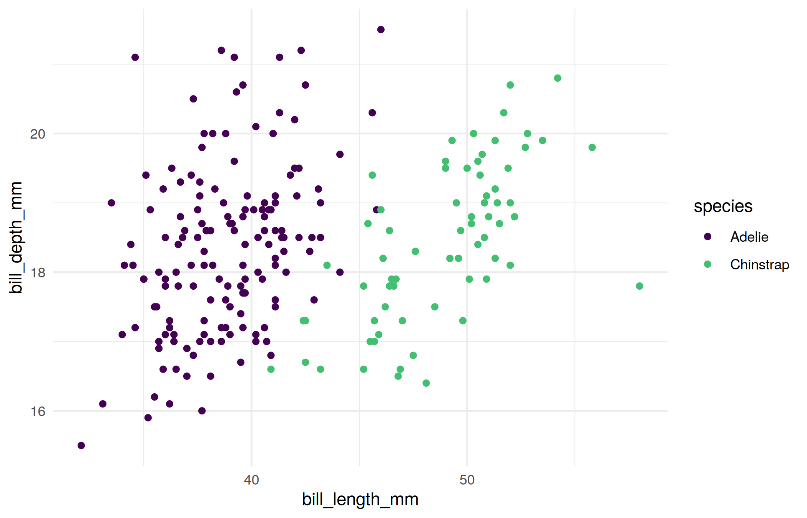

library(tidyverse) # should've already install.packages("tidyverse")
library(palmerpenguins) # might need to install.packages("palmerpenguins")
library(broom) # might need to install.packages("broom")
library(yardstick) # might need to install.packages("yardstick")
theme_set(theme_minimal())Week 3 seminar
Note
This is the student version of the notebook. The code you write goes where a line says # ... or has a ____. A code chunk with a blank starts with #| eval: false, so the file renders as it stands; delete that line once you have filled the blank. Working through the chunks one at a time in RStudio (Ctrl/Cmd+Enter) is unaffected. Answers are revealed in the seminar.
Before the seminar
The lecture proved one result, the propensity weighting theorem, which you prove again with the slides closed (exercise 4). It stated the optimal threshold theorem and the adjustment theorem and left their proofs to you (exercises 1 and 3), and it stated the confounding gap without deriving it (exercise 2). Do all four on paper before the seminar; the seminar’s problems are variations on them. You may use, without proof, two facts from ST102: the tower property, \(\mathbb E[W] = \mathbb E\big[\mathbb E[W \mid X]\big]\), and that if \(V\) is independent of \(X\), then \(\mathbb E[k(X, V) \mid X = x] = \mathbb E[k(x, V)]\) for any function \(k\) (freeze \(X\) at \(x\); the distribution of \(V\) does not move).
WarningHints
Each exercise has hints, collapsed below it. Do not open a hint unless you have been stuck for at least a few minutes, and open them in order. Exercise 4’s proof is on the lecture slides. Solutions to exercises 1 to 3 are shown in the seminar if you ask.
Exercise 1 (optimal threshold theorem). Let \(p(x) = P(Y = 1 \mid X = x)\). A false positive (predict \(1\), truth \(0\)) costs \(c_{FP} \ge 0\), a false negative (predict \(0\), truth \(1\)) costs \(c_{FN} \ge 0\), not both are \(0\), and a correct prediction costs nothing. A rule \(\delta\) assigns a prediction \(\delta(x) \in \{0, 1\}\) to every \(x\).
At a fixed \(x\), write the expected cost of predicting \(1\) and the expected cost of predicting \(0\).
Show that predicting \(1\) has the smaller expected cost exactly when \(p(x) > c^\star = c_{FP}/(c_{FP} + c_{FN})\). What happens at \(p(x) = c^\star\)?
Let \(\delta^\star\) be the rule from (b). Show that \(\mathbb E\big[\text{cost}(\delta^\star(X), Y)\big] \le \mathbb E\big[\text{cost}(\delta(X), Y)\big]\) for every rule \(\delta\).
With equal costs, what is \(c^\star\), and what is the probability of a wrong label at \(x\) under \(\delta^\star\)?
NoteHint 1
Given \(X = x\), \(Y\) is \(1\) with probability \(p(x)\). If you predict \(1\), when is that a mistake, and what does the mistake cost?
NoteHint 2
- Compare the two expected costs and solve the inequality for \(p(x)\). “Not both \(0\)” is what lets you divide.
NoteHint 3
- Condition on \(X\) first (the tower property), as in week 2’s exercise 1. What do you know about the inner expectation, at every \(x\)?
Exercise 2 (confounding gap). The lecture’s DAG made linear. \(Z\), \(\varepsilon_T\) and \(\varepsilon_Y\) are independent, \(\varepsilon_T\) and \(\varepsilon_Y\) have mean \(0\), \(\mathrm{Var}(T) > 0\), and \[ T = \alpha Z + \varepsilon_T, \qquad Y = \tau T + \gamma Z + \varepsilon_Y. \]
Under \(do(T = t)\), which variables keep their values? Show that \(\mathbb E[Y \mid do(T = t)] = \tau t + \gamma\, \mathbb E Z\), so that moving \(t\) from \(0\) to \(1\) changes the mean of \(Y\) by \(\tau\).
As observed, show that \(\mathbb E[Y \mid T = t] = \tau t + \gamma\, \mathbb E[Z \mid T = t]\), and hence \[ \mathbb E[Y \mid T = 1] - \mathbb E[Y \mid T = 0] = \tau + \gamma\,\big(\mathbb E[Z \mid T = 1] - \mathbb E[Z \mid T = 0]\big). \] Where did you use independence?
Show that the population slope of the least-squares line of \(Y\) on \(T\) alone, \(\mathrm{Cov}(T, Y)/\mathrm{Var}(T)\), is \(\tau + \gamma\,\delta\) with \(\delta = \mathrm{Cov}(Z, T)/\mathrm{Var}(T)\). Which quantity in week 2’s omitted-variable bias plays the role of \(\delta\)?
When is the gap zero?
NoteHint 1
- Delete \(T\)’s equation and set \(T = t\). Is \(Z\) upstream or downstream of \(T\)?
NoteHint 2
- Take \(\mathbb E[\,\cdot \mid T = t]\) of \(Y\)’s equation term by term. \(T\) is a function of \(Z\) and \(\varepsilon_T\); what does that say about \(\varepsilon_Y\) and \(T\)?
NoteHint 3
- Expand \(\mathrm{Cov}(T, Y)\) using \(Y\)’s equation. \(\mathrm{Cov}(T, \varepsilon_Y) = 0\) for the reason you found in (b).
Exercise 3 (adjustment theorem). The lecture stated this one; prove it. Structural model: \(Z\), \(\varepsilon_T\) and \(\varepsilon_Y\) independent, \(T = h(Z, \varepsilon_T)\), \(Y = g(T, Z, \varepsilon_Y)\); under \(do(T = t)\) the equation for \(T\) is deleted, \(T\) is set to \(t\), and everything else keeps its equation and its noise. Show that, wherever \(P(T = t \mid Z) > 0\), \[ \mathbb E[Y \mid do(T = t)] = \mathbb E_Z\Big[\,\mathbb E[Y \mid T = t, Z]\,\Big], \] and say where each assumption is used: the independence of the noises, \(Z\) not being a consequence of \(T\), and \(P(T = t \mid Z) > 0\).
NoteHint 1
Start from the intervened world. What is \(Y\) under \(do(T = t)\), and which variables keep their values? Give the average over the noise with \(Z\) frozen a name: \(m_t(z) = \mathbb E\big[g(t, z, \varepsilon_Y)\big]\).
NoteHint 2
Use the second ST102 fact, with \(V = \varepsilon_Y\) and \(Z\) in the role of \(X\), to show \(\mathbb E[Y \mid do(T = t)] = \mathbb E_Z\big[m_t(Z)\big]\).
NoteHint 3
Now the observed world: on \(\{T = t, Z = z\}\), \(Y = g(t, z, \varepsilon_Y)\). Why is \(\varepsilon_Y\) independent of \((T, Z)\), and what does that give for \(\mathbb E[Y \mid T = t, Z = z]\)?
NoteHint 4
Why is the distribution of \(Z\) the same in the observed and the intervened worlds?
Exercise 4 (propensity weighting theorem). The lecture proved this one. Close the slides and prove it again. The structural model of exercise 3, with \(T \in \{0, 1\}\) and the propensity score \(\pi(z) = P(T = 1 \mid Z = z)\), where \(0 < \pi(Z) < 1\) with probability one.
Show that \(\mathbb E[Y \mid do(T = 1)] = \mathbb E\big[T\,Y/\pi(Z)\big]\), and say where you used the independence of the noises, \(Z\) not being a consequence of \(T\), and \(\pi(Z) > 0\).
Show that \(\mathbb E[Y \mid do(T = 0)] = \mathbb E\big[(1 - T)\,Y/(1 - \pi(Z))\big]\).
Without the structural model, show by conditioning on \(Z\) that \(\mathbb E\big[T\,Y/\pi(Z)\big] = \mathbb E_Z\big[\,\mathbb E[Y \mid T = 1, Z]\,\big]\). What does that say about the two theorems?
NoteHint 1
- \(T\) is \(0\) or \(1\). Check that \(T\,Y = T\,g(1, Z, \varepsilon_Y)\) in both cases.
NoteHint 2
- Use the second ST102 fact with \(V = \varepsilon_T\) and \((Z, \varepsilon_Y)\) in the role of \(X\): what is \(\mathbb E[T \mid Z, \varepsilon_Y]\)? Then condition on \((Z, \varepsilon_Y)\) with the tower property.
NoteHint 3
- \(T\,Y = Y\,\mathbb 1[T = 1]\), so \(\mathbb E[T\,Y \mid Z] = P(T = 1 \mid Z)\, \mathbb E[Y \mid T = 1, Z]\).
Problems
Problem 1 (costs 5 and 1). A conservation survey classifies penguins from a photograph. Labeling a Chinstrap as an Adelie (a miss) wastes a return visit, cost 5; labeling an Adelie as a Chinstrap (a false alarm) wastes a phone call, cost 1. Write \(p(x) = P(\text{Chinstrap} \mid x)\).
Find the threshold on \(p(x)\) above which predicting Chinstrap has the smaller expected cost. What happens at the threshold itself?
A fitted model gives \(\hat p = 0.25\) for one bird. What does the rule predict, and what would have to be true of \(\hat p\) for that prediction to be the best one at that \(x\)?
The survey hands the same \(\hat p\) to two field teams. For team A a miss costs 5 and a false alarm 1; for team B both cost 1. For which values of \(\hat p\) do the two teams make different calls?
Say in one sentence what the survey decided when it chose 5 and 1.
Problem 2 (the lecture’s DAG, with numbers). Let \(Z\) have mean \(0\) and variance \(1\); let \(T = Z + \varepsilon_T\) and \(Y = T + 2Z + \varepsilon_Y\), where \(\varepsilon_T\) and \(\varepsilon_Y\) have mean \(0\) and variance \(1\), and \(Z\), \(\varepsilon_T\), \(\varepsilon_Y\) are independent.
What is the effect on \(\mathbb E[Y]\) of raising \(t\) by one under \(do(T = t)\)?
Compute \(\mathrm{Var}(T)\), \(\mathrm{Cov}(T, Y)\) and the population slope of the regression of \(Y\) on \(T\) alone. Write it as “effect plus gap” and identify the gap.
Compute \(\mathbb E[Y \mid T = t, Z = z]\), average it over \(Z\), and check that you recover (a). Where did you use that the noises are independent?
Problem 3 (propensity weighting by hand). \(Z\) is \(0\) or \(1\), each with probability \(\tfrac12\). Treatment depends on \(Z\): \(T = h(Z, \varepsilon_T)\) with \(\pi(0) = 0.2\) and \(\pi(1) = 0.8\). The outcome is \(Y = 2T + 4Z + \varepsilon_Y\), with \(\varepsilon_Y\) of mean \(0\), and \(Z\), \(\varepsilon_T\), \(\varepsilon_Y\) independent.
What is \(\mathbb E[Y \mid do(T = 1)] - \mathbb E[Y \mid do(T = 0)]\)?
Picture 100 units in exactly these proportions. How many are treated with \(Z = 0\), treated with \(Z = 1\), untreated with \(Z = 0\), untreated with \(Z = 1\)? Compute \(\mathbb E[Y \mid T = 1] - \mathbb E[Y \mid T = 0]\) and write it as effect plus gap.
Give each treated unit the weight \(1/\pi(Z)\) and each untreated unit the weight \(1/(1 - \pi(Z))\), and multiply each count from (b) by its weight. What do the weighted treated units look like? Compute \(\mathbb E\big[T\,Y/\pi(Z)\big]\) and \(\mathbb E\big[(1 - T)\,Y/(1 - \pi(Z))\big]\) and compare with (a).
Which units get the largest weights? What would happen to them if \(\pi(0)\) were \(0.01\)?
Optional, can be done at home
Problem 4 (the causation runs the other way). \(Y = \varepsilon_Y\) with variance \(4\), and \(T = 0.4\,Y + \varepsilon_T\), with \(\varepsilon_T\) of variance \(0.16\), independent of \(Y\). Find the population slope of \(Y\) on \(T\) and the effect of raising \(t\) by one. Compare with problem 2(b).
NoteHint 1
\(\mathrm{Var}(T) = 0.4^2\,\mathrm{Var}(Y) + \mathrm{Var}(\varepsilon_T)\).
Problem 5 (a model that predicts well). A hospital fits a model that predicts which patients will be readmitted within 30 days, and it predicts well on held-out patients. Management proposes to reduce readmissions by acting on the model’s strongest predictor. Draw the DAGs of three worlds consistent with that held-out score, say in which of them the plan works, and say what the score told you about which world you are in.
NoteHint 1
The lecture’s explanations of an observed correlation: the predictor causes readmission, a common cause drives both, or readmission risk drives the predictor.
Coding
1. Penguins: a probability and a threshold
Adelie against Chinstrap, from the bill. Keep the two species and the birds with complete measurements.
pg <- palmerpenguins::penguins |> # modeldata also has a penguins; be explicit
filter(species != "Gentoo") |>
drop_na(bill_length_mm, bill_depth_mm, flipper_length_mm) |>
mutate(chinstrap = as.numeric(species == "Chinstrap"))
ggplot(pg, aes(bill_length_mm, bill_depth_mm, colour = species)) +
geom_point() +
scale_colour_viridis_d(end = 0.7)
Step 1. How many birds, and what proportion are Chinstraps? What accuracy would a classifier that always predicts the more common species achieve?
# nrow(pg); mean(pg$____)
# max(____, 1 - ____)
# ...Step 2. Fit the logistic regression of chinstrap on the two bill measurements with glm(..., family = binomial). Look at tidy(), then at tidy(..., exponentiate = TRUE).
# fit_bill <- glm(____ ~ ____ + ____, family = binomial, data = pg)
# tidy(fit_bill)
# tidy(fit_bill, exponentiate = TRUE)
# ...Checkpoint (run it; if it stops, fix step 2 before going on):
stopifnot(inherits(fit_bill, "glm"), length(coef(fit_bill)) == 3,
all(fitted(fit_bill) >= 0 & fitted(fit_bill) <= 1))You may have seen a warning that fitted probabilities are numerically 0 or 1: the two species are nearly separable on these two measurements (step 3 counts the errors). This is the lecture’s “Challenges” slide in real life; next week says what it does to the fitting.
Question 1. Read the exponentiated coefficient on bill_length_mm. What happens to the odds of Chinstrap when bill length increases by one millimeter and bill depth is held fixed? Is that the change in the probability? Is it what would happen to a bird whose bill grew by a millimeter?
Step 3. The confusion matrix at threshold \(\tfrac12\), with table(). From it, compute the accuracy, the true positive rate and the false positive rate.
# p_hat <- fitted(fit_bill)
# tab <- table(truth = pg$chinstrap, predicted = as.numeric(p_hat > ____))
# tab
# accuracy <- (tab[1, 1] + tab[2, 2]) / sum(tab)
# tpr <- ____ ; fpr <- ____
# ...Checkpoint:
stopifnot(sum(tab) == nrow(pg), tpr >= 0, tpr <= 1, fpr >= 0, fpr <= 1)Step 4. The bill model is nearly perfect, so it cannot show the trade-off. Fit a weaker model on flipper_length_mm alone, then compute the ROC curve yourself: for thresholds from 0 to 1, the true positive rate and the false positive rate. Plot one against the other. The loop is set up; you write the two rates.
fit_flipper <- glm(chinstrap ~ flipper_length_mm, family = binomial, data = pg)
pg <- pg |> mutate(p_flipper = fitted(fit_flipper))
thresholds <- seq(0, 1, by = 0.01)
roc_by_hand <- map_dfr(thresholds, function(t) {
yhat <- as.numeric(pg$p_flipper > t)
# tibble(t = t,
# tpr = sum(yhat == 1 & pg$chinstrap == 1) / sum(____),
# fpr = sum(____) / sum(____))
# ...
})
# ggplot(roc_by_hand, aes(____, ____)) + geom_path() + coord_equal()
# ...Checkpoint:
stopifnot(nrow(roc_by_hand) == length(thresholds),
all(roc_by_hand$tpr >= 0 & roc_by_hand$tpr <= 1),
roc_by_hand$tpr[1] == 1, roc_by_hand$fpr[1] == 1)Question 2. The area under your curve equals the probability that a randomly chosen Chinstrap gets a higher fitted probability than a randomly chosen Adelie, with a tie counting half. Why does accumulating one point per threshold produce that probability? Why are ties certain to occur with this model?
Step 5. Costs. A miss costs 5, a false alarm 1. For each threshold compute the cost per bird on the 219 birds, \(5 \cdot (\text{misses}/n) + 1 \cdot (\text{false alarms}/n)\), find the threshold that minimizes it, and compare with problem 1’s threshold.
# costs <- map_dfr(thresholds, function(t) {
# yhat <- as.numeric(pg$p_flipper > t)
# tibble(t = t, cost = (5 * sum(____) + 1 * sum(____)) / nrow(pg))
# })
# ggplot(costs, aes(t, cost)) + geom_line()
# costs |> slice_min(cost, n = 3)
# ...Checkpoint:
stopifnot(nrow(costs) == length(thresholds), all(costs$cost >= 0))Question 3. The cost-minimizing threshold is well below \(\tfrac12\), and the classifier now raises many false alarms. Who decided that, and in what sense is this classifier “better” than the one at \(\tfrac12\)? Is the number you found the population optimum?
Optional, can be done at home: the same with yardstick
yardstick computes the confusion matrix, the ROC curve and the AUC. It wants factors, and the event_level = "second" argument tells it that 1 is the class of interest.
# pg_y <- pg |> mutate(truth = factor(chinstrap),
# predicted = factor(as.numeric(p_hat > 0.5), levels = c(0, 1)))
# conf_mat(pg_y, truth = truth, estimate = predicted)
# roc_curve(pg_y, truth, p_flipper, event_level = "second") |> autoplot()
# roc_auc(pg_y, truth, ____, event_level = "second")
# ...2. Simulated worlds: adjustment and propensity weighting
Four simulated worlds in which \(Y\) is regressed on \(X\). In the lecture the target variable was called \(T\); here it is X, because T is TRUE in R. The function draws the noise once and keeps it, so that an intervention can be computed for the same units. World D is the lecture’s DAG with the confounder \(Z\) observed: \(Z \to X\), \(Z \to Y\), \(X \to Y\). Step 4 adds a fifth world, E, with the same DAG and a binary treatment.
simulate_world <- function(world, n = 500) {
e_u <- rnorm(n)
e_x <- rnorm(n)
e_y <- rnorm(n)
if (world == "A") { # X causes Y
X <- e_x
Y <- 2 * X + e_y
Z <- NA
} else if (world == "B") { # U causes both; U is not observed
U <- e_u
X <- U + 0.5 * e_x
Y <- 2.5 * U + e_y
Z <- NA
} else if (world == "C") { # Y causes X
Y <- 2 * e_y
X <- 0.4 * Y + 0.4 * e_x
Z <- NA
} else { # D: Z causes both, and X causes Y; Z is observed
Z <- e_u
X <- 5 - 2 * Z + e_x
Y <- 4 + 2 * Z - 3 * X + e_y
}
tibble(world = world, X = X, Y = Y, Z = Z, e_u = e_u, e_x = e_x, e_y = e_y)
}
worlds <- bind_rows(simulate_world("A"), simulate_world("B"), simulate_world("C"), simulate_world("D"))Step 1. In each world, fit lm(Y ~ X) and report the slope.
# worlds |>
# group_by(world) |>
# summarise(slope = coef(lm(____))[2])
# ...Question 4. Before you intervene: for each world, write down what you expect to happen to \(Y\) when \(X\) is set to \(X + 1\) for every unit with the same noise, and the average change. Use each world’s equations, and exercise 2 for world D.
Step 2. Now intervene: set \(X\) to \(X + 1\) for every unit and recompute \(Y\) with the same noise, following each world’s equations. Write the four Y_do lines and compute the average change in \(Y\) in each world.
intervene <- function(d) {
d |> mutate(
X_do = X + 1,
# Y_do = case_when(
# world == "A" ~ ____,
# world == "B" ~ ____,
# world == "C" ~ ____,
# world == "D" ~ ____
# )
# ...
)
}
worlds_do <- intervene(worlds)
worlds_do |>
group_by(world) |>
summarise(slope = coef(lm(Y ~ X))[2],
effect_of_intervention = mean(Y_do - Y))Checkpoint:
stopifnot(all(c("X_do", "Y_do") %in% names(worlds_do)),
abs(mean(worlds_do$Y_do[worlds_do$world == "C"] - worlds_do$Y[worlds_do$world == "C"])) < 1e-8)The average change is the average treatment effect of the intervention, \(\mathbb E[Y \mid do(X = x + 1)] - \mathbb E[Y \mid do(X = x)]\), computed on these units: exactly \(2\), \(0\), \(0\) and \(-3\), because the noise was reused.
Step 3. World D, the adjustment theorem in code. Regress Y on X and Z and read off the coefficient on X. Then do what the theorem says: fit \(\hat m(x, z)\) for \(\mathbb E[Y \mid X = x, Z = z]\) (the same regression), evaluate it at every unit’s \(Z\) with \(X\) set to \(X + 1\) and to \(X\), and average the difference.
d <- worlds |> filter(world == "D")
# fit_d <- lm(Y ~ ____ + ____, data = d)
# tidy(fit_d)
# mean(predict(fit_d, newdata = mutate(d, X = ____))) - mean(predict(fit_d, newdata = d))
# ...Question 5. The coefficient on X and the averaged difference are the same number, and both are near \(-3\). Which result says the coefficient estimates the effect, which says the averaged difference does, and what about world D made both work? What would go wrong in world B, where the confounder e_u is in the table but would not be observed in practice?
Step 4. World E: the same DAG, with a binary treatment. Each unit is treated (X = 1) with probability \(\pi(Z)\), where \(\pi(z) = 1/(1 + e^{-(-0.5 + 1.5 z)})\), and \(Y = 1 + 2X + 3Z + \varepsilon_Y\), so the effect of treatment is \(2\). Compute three estimates of it: the naive difference in means between treated and untreated; the propensity weighting estimate, with \(\hat\pi\) from the logistic regression of X on Z; and the coefficient on X in lm(Y ~ X + Z). Then look at the five units with the largest weights.
simulate_world_e <- function(n = 2000) {
Z <- rnorm(n)
e_x <- runif(n)
e_y <- rnorm(n)
X <- as.numeric(e_x < plogis(-0.5 + 1.5 * Z)) # treated with probability pi(Z)
Y <- 1 + 2 * X + 3 * Z + e_y
tibble(X = X, Y = Y, Z = Z)
}
d_e <- simulate_world_e()# fit_pi <- glm(____ ~ ____, family = binomial, data = d_e)
# d_e <- d_e |> mutate(pi_hat = fitted(fit_pi),
# w = ifelse(X == 1, ____, ____))
# c(naive = mean(d_e$Y[d_e$X == 1]) - mean(d_e$Y[d_e$X == 0]),
# weighting = mean(d_e$X * d_e$Y / d_e$pi_hat) - mean(____),
# regression = coef(lm(Y ~ X + Z, data = d_e))[["X"]])
# d_e |> slice_max(w, n = 5)
# ...Checkpoint (as in problem 3(c), the weighted treated units and the weighted untreated units should each count as about the whole sample):
stopifnot(all(d_e$pi_hat > 0 & d_e$pi_hat < 1), all(d_e$w >= 1),
abs(sum(d_e$w[d_e$X == 1]) / nrow(d_e) - 1) < 0.25,
abs(sum(d_e$w[d_e$X == 0]) / nrow(d_e) - 1) < 0.25)Question 6. Which of the three estimates are near \(2\), and which result explains each one? Which units have the largest weights, and what is unusual about them? If the unit with the largest weight had not been in the sample, by how much would the weighting estimate move?
Optional, can be done at home: same noise or fresh noise
Question 7. Redraw the noise in intervene() (replace e_y by rnorm(n())) and look at Y_do - Y unit by unit in world A. What changes, and what does not? Which version is the counterfactual for a unit, and which is a new draw from the intervened world?
Optional, can be done at home: weighting against regression, many times
Question 8. Simulate world E 200 times and compute the weighting estimate and the regression coefficient each time. Compare their means and their standard deviations. Why is one more variable than the other, and when would you use weighting anyway?
# one_run <- function() {
# d <- simulate_world_e()
# pi_hat <- fitted(glm(X ~ Z, family = binomial, data = d))
# tibble(weighting = ____, regression = ____)
# }
# runs <- map_dfr(1:200, \(i) one_run())
# runs |> summarise(across(everything(), list(mean = mean, sd = sd)))
# ...Optional, can be done at home: another dataset
Attrition (modeldata::attrition; fictional, made up by IBM data scientists, used only as an exercise): whether an employee leaves, with a threshold-and-costs story (a missed leaver costs a replacement, a false alarm costs a conversation). Leavers are 16 percent, so the accuracy-against-cost point is sharper: at threshold \(\tfrac12\) almost nobody is predicted to leave.
library(modeldata)
data(attrition)
att <- attrition |> mutate(left = as.numeric(Attrition == "Yes"))
fit_att <- glm(left ~ OverTime + MonthlyIncome + Age + JobSatisfaction, family = binomial, data = att)
# then steps 3, 4 and 5 with p = fitted(fit_att), costs 10 (a missed leaver) and 1 (a false alarm)
# ...